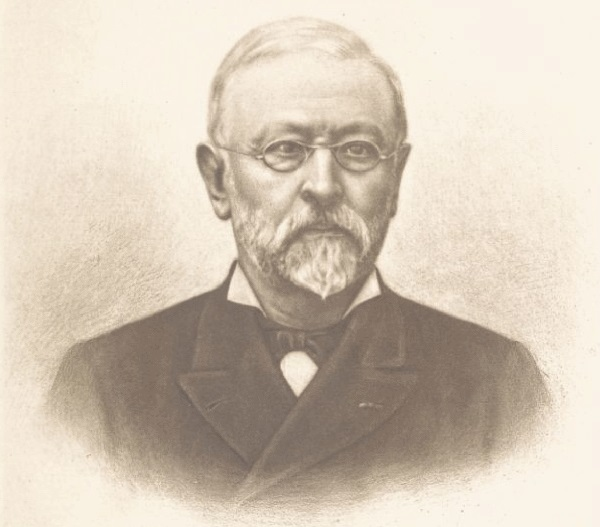

M. Charles-Albin Mazon naquit à Largentière, le 20 octobre 1828, d’une ancienne famille originaire d’Antraïgues (1). Son père, le docteur Louis-Victorin Mazon (2), vint s’établir à Largentière en 1824 et y exerça la médecine pendant de longues années. Son aïeul avait été receveur particulier dans la même ville (3). M. Albin Mazon fit ses études au collège de Privas, alors dirigé par les Basiliens, et conserva de leur enseignement un souvenir reconnaissant qu’il se plaisait à rappeler. En 1855 il était rédacteur en chef de l’Avenir de Nice, journal dans lequel il mena une campagne active en faveur de l’annexion à la France, campagne qui le fit expulser en 1861 par les autorités italiennes, et lui mérita la croix de la Légion d’honneur, qu’il reçut le 15 août 1862. Il vint à Paris après son expulsion et fut nommé directeur des services télégraphiques à l’agence Havas, fonctions absorbantes et délicates qu’il occupa pendant près de trente ans. Il donna sa démission au mois d’octobre 1890 et se consacra désormais aux travaux d’histoire locale qui occupaient déjà ses rares loisirs depuis une vingtaine d’années. Il travaillait encore pendant la cruelle maladie qui devait l’emporter. Après ses enfants qu’il aimait tendrement, l’objet de ses dernières pensées fut le pays qu’il a servi, la plume à la main, pendant près d’un demi-siècle. Il est mort en chrétien, le 29 février 1908 et repose à Privas, au cœur de ce vieux Vivarais qu’il a tant aimé.

Depuis 1870 M. Mazon a publié un nombre considérable d’articles, de brochures ou de volumes : nous en avons relevé plus de cent cinquante dans la bibliographie, certainement incomplète, qu’on trouvera plus loin. Peu d’historiens ont fait preuve d’une telle fécondité ; mais, pour se bien rendre compte du mérite qu’eut M. Mazon à manifester une telle puissance de travail, il faut se rappeler dans quelles circonstances il parvint à recueillir la prodigieuse quantité de documents dont il tira ses publications : sa situation à l’agence Havas ne lui laissait que peu de loisirs et ne lui ménageait pas les soucis ; il lui fallut, pour triompher de ces difficultés, une rare lucidité d’esprit jointe à une extraordinaire activité ; il fut encore soutenu, sans doute, par l’affection passionnée qu’il gardait à son pays natal.
C’est dans cet amour de la petite patrie qu’il trouva l’idée première de son œuvre : vulgariser l’histoire du Vivarais. Il commença dans ce but une série de Voyages, où il abordait tous les sujets et les mettait à la portée de tous. Ces publications furent bien accueillies et l’on peut dire que le nom du docteur Francus, sous lequel parurent ces volumes, est presque devenu populaire en Ardèche. M. Mazon fut dans ces voyages, où il vantait les beautés méconnues du Vivarais et mettait en lumière ses ressources inutilisées, comme le précurseur des Syndicats d’Initiative qui font tant, aujourd’hui, pour la prospérité du département. Il fit paraître successivement treize volumes, où la partie historique augmentait constamment en importance et en autorité ; cette collection tient une place à part dans l’œuvre de M. Mazon et constitue un ensemble aussi original qu’utile.
Plus tard, à mesure que s’augmentaient ses notes et que ses vues sur l’histoire du pays devenaient plus profondes et plus précises, M. Mazon aborda des travaux d’une érudition plus serrée ; à un âge où d’autres n’auraient aspiré qu’à jouir d’un repos bien gagné, il redoubla d’activité et entreprit une série d’ouvrages où il ressuscita bien des figures de Vivarois injustement oubliés, où il retraça le passé des principales villes du pays et où il étudia les périodes les plus mouvementées de l’histoire du Vivarais. Dans cette seconde partie de son œuvre il eut soin de s’entourer de tous les renseignements qui pouvaient lui être utiles. Les archives publiques et privées du département n’avaient plus de secrets pour lui ; il sut encore extraire des minutes de notaires bien des documents curieux, négligés jusqu’alors ; et surtout il fut le premier qui comprit tout ce qu’un historien provincial peut recueillir dans les grandes bibliothèques et les dépôts d’archives de Paris. Assidu à la Bibliothèque et aux Archives nationales il dépouilla le fonds peu exploré des Archives du Ministère des Affaires étrangères, et il avait même fait, avant la guerre de fructueuses recherches à la Bibliothèque du Louvre, qui fut brûlée pendant la Commune. C’est à cette étude complète de toutes les sources de notre histoire locale que tient en partie la supériorité de son œuvre : il a su choisir les meilleurs matériaux et les découvrir partout où ils se cachaient, mais mieux encore il a su les mettre en œuvre : il arrivait à résoudre les difficultés avec une élégante clarté, et il avait le don de présenter sous une forme agréable le résultat des plus arides recherches, gardant pour lui la peine et laissant au lecteur le plaisir et l’intérêt sans lui laisser soupçonner l’effort qui lui avait été nécessaire.
Il faut dire encore quelques mots d’une œuvre dont l’honneur doit être reporté en grande partie à M. Mazon : la Revue du Vivarais, fondée en 1893 par M. Paul d’Albigny. M. Mazon en fut l’un des promoteurs, et l’on peut dire qu’il en fut l’âme. Il voyait dans le groupe d’écrivains qui en constituent la rédaction comme ses continuateurs ; il ne leur ménageait ni sa bienveillance ni ses conseils, et il n’est pas un d’entre eux qui n’ait eu à se louer de son inépuisable obligeance. Ils se considéraient un peu comme ses élèves et l’entouraient d’une respectueuse affection. En donnant à la Revue du Vivarais une collaboration de tous les instants M. Mazon a contribué largement au succès de cette entreprise désintéressée, dont la réussite paraissait douteuse dans un département aussi pauvre, et cette sollicitude, qu’il lui a témoignée jusque dans les derniers jours, lui doit être un autre titre à la reconnaissance de ses compatriotes.
Pour se faire une idée exacte de l’œuvre de M. Mazon, il faut l’étudier d’un peu près, et dans son ensemble. Si plusieurs de ses travaux se recommandent particulièrement par l’intérêt ou la nouveauté du sujet, par la forme plus soignée, ou par l’importance des recherches, toutes ses publications sont solidaires. Il est fréquemment revenu sur les mêmes questions lorsque des documents nouveaux pouvaient les éclairer, et tous ses ouvrages ne sont pas loin de former, en fait, l’Encyclopédie de l’Ardèche qu’il avait rêvé d’écrire.
Faire connaître et aimer son pays, tel est le but que s’était d’abord proposé M. Mazon. Dans cette pensée, il entreprit comme nous l’avons dit une série de Voyages en Vivarais, commencée en 1878 et qu’il poursuivit jusqu’à la fin de sa vie. Historien, géologue, naturaliste et philosophe, il aborda tous les sujets, s’attachant à instruire et à moraliser, sans ennuyer. Il avait été romancier à ses heures, et s’en souvint en écrivant ces voyages, qui sont constamment d’une lecture agréable, et surent captiver le public, peu préparé, auquel il les destinait.
A l’apparition de ces premiers volumes certains critiques firent à l’auteur le reproche de toucher aux questions politiques ; il s’en défendit avec raison, déclarant qu’il n’appartenait à aucun parti et que son indépendance lui permettait de distribuer équitablement le louange ou le blâme. Il aurait pu ajouter que ses fonctions à l’agence Havas l’avaient mis en rapport pendant de longues années avec tous les hommes qui se sont succédés aux affaires, et qu’il avait tiré de ce contact journalier avec des hommes d’état d’origine et d’opinion différentes une expérience qui le mettait mieux que d’autres à même de juger impartialement ses contemporains. Sa franchise le priva d’encouragements, que d’ailleurs il ne recherchait point, et lui valut de n’être pas l’historiographe officiel du Vivarais : son œuvre n’en a que plus de valeur.
Quelques lecteurs ont regretté la forme anecdotique qu’il donnait à ses premiers livres et auraient préféré qu’il ne se départît point du ton sévère qu’ils jugaient convenir à un historien. M. Mazon leur réservait une ample satisfaction dans d’autres ouvrages, mais il voulait être d’abord un vulgarisateur, et il avait choisi pour y réussir une forme dénuée de prétention. Il avait vu juste puisque le public fit bon accueil à ses livres (4) et que des notions et le goût de l’histoire locale ont génétré grâce à lui dans des milieux relativement peu lettrés. Il a d’ailleurs distribué lui-même avec générosité un grand nombre de livres ; beaucoup d’écoles ont bénéficié de son désintéressement et il a pu, autant qu’il lui était possible, remédier ainsi à une lacune de l’enseignement public. Il faut lire ces Voyages pour y goûter la verve très personnelle de M. Mazon, son humour méridionale et la forme presque primesautière qu’il savait donner à des réflexions si profondément sensées. Des juges d’une haute compétence (5) appréciaient à leur valeur ces ouvrages de M. Mazon et l’extraordinaire variété des documents qu’il avait su découvrir.
On relira longtemps ces Voyages pour y chercher une utile récréation, mais nous voudrions montrer aussi, en les passant rapidement en revue, que les érudits peuvent y recueillir des documents précis qui ne se trouvent pas ailleurs. A considérer cette série dans son ensemble on s’aperçoit qu’elle forme un tout solide, et qu’une table générale en ferait presque un dictionnaire topographique et biographique de l’Ardèche.
Le Voyage aux pays volcaniques du Vivarais, comme les premiers volumes de cette série, est plus anecnotique qu’historique ; c’est la nature qui en a fixé l’itinéraire, d’un volcan à un autre, depuis le Chenavari jusqu’à Antraïgues et Montpezat. La géologie y tient comme de juste une grande place ; un chapitre y est consacré à J.-B. Dalmas, géologue de mérite ; d’autres aux eaux minérales du Vernet, de Neyrac et de Marcols, et à la question du reboisement. On y trouve, à propos du château de Pourcheyrolles, un très juste éloge des paysages vivarois, appuyé par une flatteuse citation du géologue anglais Poulett Scrope. Arrivant à Antraïgues, l’auteur recueille quelques notes d’histoire contemporaine sur le pèlerinage de Saint-Roch, et la communauté des sœurs garde-malades de St-Roch, et aussi sur un défenseur ignoré de Louis XVI, Louis Mazon, son grand père, dont il raconte brièvement la courageuse initiative.
Le Voyage autour de Valgorge ne diffère pas sensiblement, comme composition, du précédent. L’auteur y fixe quelques renseignements conservés depuis un siècle par la tradition, comme la rivalité des habitants de Saint-Mélany et de Sablières et la réconciliation solennelle qui fut ménagée entre eux par leurs prieurs. Il faut citer parmi les descriptions celle du donjon de Montréal, et des notes biographiques sur les La Fare et sur Ovide de Valgorge.
Le Voyage autour de Privas marque une orientation nouvelle vers les questions d’histoire locale. M. Mazon y utilise la Collection de Languedoc, formée par les Bénédictions, et dans laquelle il avait remarqué la correspondance du marquis de Jovyac, qui forme une véritable chronique de la bonne société vivaroise au XVIIIe siècle. Le livre du géologue italien Marzari-Pencati lui a encore fourni des notes très vivantes. Chemin faisant l’auteur traite de petits sujets d’histoire locale, comme le pélerinage de Pramailhet et la fontaine de Boulègue, dans des chapitres qui sont des monographies très complètes. On trouve, dans la suite du volume, tout ce qu’il faut savoir sur des notabilités ardéchoises comme Delichères, les frères Allignol, le général Massol ou les Hilaire de Jovyac. Pour Privas même, dont l’histoire a été un peu négligée, un dernier chapitre donne une suite de notes chronologiques et le récit documenté des démêlés qui se produisirent sous Napoléon Ier pour le maintien de la préfecture à Privas.
Deux ans plus tard paraissait le Voyage dans le midi de l’Ardèche, consacré aux cantons de Joyeuse, des Vans et de Vallon. Un historique des pélerinages de Chapias, de la Blachère et de Cornillon, des notes sur l’hermitage de Saint-Eugène, sur le P. Nicolas, curé de la Rochelle, sur l’abbé de la Salle, qui fit un séjour aux Vans, enfin, pour Rosière, le procès-verbal de la visite de l’église, en 1675, par M. Monge, vicaire général, donnent une large place dans ce volume à l’histoire religieuse. Celle des familles n’y est pas moins bien représentée. M. Mazon ne s’est jamais attaché au point de vue purement généalogique et nobiliaire dans les études qu’il a consacrées aux familles du Vivarais : il les a plutôt considérées au point de vue du rôle historique qu’elles ont joué dans le pays. C’est ainsi qu’il a cité les Barthélemy de la Forest, famille de Joyeuse qui eut son heure d’éclat, et dont il raconte la misérable fin. Un chapitre entier est consacré aux Chanaleilles et à leur généalogie, dressée d’après les manuscrits de l’abbé Chambron, généalogie sur laquelle M. Mazon, mieux averti, devait plus tard faire des réserves, mettant même en doute l’existence de l’abbé Chambron. (Notice sur Jaujac, p. 281.) Un autre chapitre retrace l’histoire de la famille considérable des Merle de Lagorce, et le dernier constitue la bio-bibliographie la plus complète, croyons-nous, de M. Eugène Villard, de Vallon.
Le Voyage le long de la rivière d’Ardèche est peut-être le plus vivant de la série. Les documents qui s’y mêlent aux légendes n’ont rien de rébarbatif. Quelques notes sur la famille, le prieuré et l’hermitage d’Ucel, amènent l’auteur a parler de feu M. Henry Deydier, dont l’œuvre historique et généalogique, bien que demeurée manuscrite, mérite d’être citée. A propos d’Aubenas, il réfute une légende mise en circulation par Ovide de Valgorge, et d’après laquelle la terre d’Aubenas serait échue à la famille de Vogüé à la suite d’un heureux coup de dés, légende erronée s’il en fut, qui a fait une grande fortune, et que l’on voit reparaître de temps en temps sous la plume d’auteurs plus soucieux du détail pittoresque que de la vérité historique. D’Aubenas, M. Mazon passe à Vogüé où il présente aux lecteurs une dynastie de rois d’Yvetot, les Tastevin, dont la bonne popularité méritait d’être signalée. A propos de Balazuc l’auteur risque la gauloise légende de Jacqueline de Borne. Un chapitre est consacré au cardinal de Bernis, et un autre à Madame Vierne de Baladun, bienfaitrice de Bourg-Saint-Andéol, identifiée avec une Balazuc.
Le Voyage au pays helvien est limité à la région qui s’étend entre Viviers et Largentière. On y trouve d’intéressants détails sur la topographie de Villeneuve de Berg et sur ses usages locaux. Le volume entier contient un assez grand nombre de biographies de notables Vivarois : Jean de Serres, Antoine Court et Court de Gébelin, les Barruel, J. L. de Laboissière, S. P. de Tavernol, l’abbé Feuillade, le chanoine Rouchier, Jacques de Bane, Jacques et Marie de Romieu, Honoré Flaugergues, l’abbé Barracand, et surtout le vicomte de Saint-Andéol, archéologue dont M. Mazon énumère et apprécie l’œuvre, et le président Challamel. Celui-ci, né en 1763, n’a laissé que des manuscrits inédits ; son érudition a sensiblement vieilli, et cette constatation n’enlève rien à son mérite. L’auteur analyse ses œuvres et reproduit son opinion sur l’origine des Etats de Vivarais, opinion intéressante, ingénieuse et peu fondée que M. Mazon devait contredire lui-mème, aprés avoir étudié le sujet, dans son Essai sur le Vivarais pendant la guerre de cent ans (pp. 292, 301).
Le Voyage au Bourg-Saint-Andéol avec des détails de mœurs et des souvenirs pittoresques, comme le récit d’un voyage fait en bâteau par l’auteur, du Pont-Saint-Esprit au Bourg-Saint-Andéol, vers 1840, contient des notices qui restent à consulter sur des Vivarois peu connus du XVIIe et du XVIIIe siècle, comme le médecin Combalusier, né en 1713, qui professa la pharmacie à Paris, et Jacques Mosnier, juriste, qui publia en 1618 sous le titre de Véritables alliances du droit français un recueil qui ne mérite pas l’oubli dans lequel il est tombé. Plus près de nous, l’auteur fixe les silhouettes d’Henri d’Audigier, publiciste aimable et distingué, et de l’abbé Chiron, aumônier des prisons de Privas, qui laissa une mémoire vénérée.
Le Voyage autour de Crussol conduit pour la première fois le lecteur dans le Haut-Vivarais. M. Mazon y donne au début d’intéressantes indications sur sa méthode de travail et sur les publications qu’il projetait. Comme dans les volumes précédents on y trouve quelques biographies : celle de M. Dode, député aux Etats généraux, et de l’abbé Garnodier, historien ; des détails de mœurs comme la description du jeu de la « Surle » qui fleurit à Charmes depuis des siècles, sur les Crussol, et les mémoires de M. de Villeneuve La-Roche-Barnaud, de Saint-Péray, émigré et échappé aux massacres de Quiberon ; mais il faut y signaler surtout un important chapitre sur les anciennes divisions administratives du Vivarais.
Le Voyage au Mont-Pilat n’a presque rien de vivarois, c’est surtout en naturaliste et en philosophe que M. Mazon a parcouru cette région du Forez ; il donne cependant une note sur Jean Bruzeau, fondateur de la communauté des hermites de Saint-Montan, et quelques renseignements sur les origines de l’industrie de la soie en Vivarais.
Le Voyage à travers l’Ardèche et la Haute-Loire, plus rapide que les précédents, est aussi plus anecdotique, on y trouve cependant des détails sur de pieux personnages nés dans la montagne ardéchoise : la mère Rivier et l’abbé Chiron (déjà cités dans le Voyage au Bourg-Saint-Andéol), l’abbé Terme et la sœur Térèse Couderc. Chemin faisant, M. Mazon rectifie encore une légende : celle de Madame de Rochebonne, l’amie de madame de Sévigné, et de ses prétendus séjours en Vivarais.
Le Voyage autour d’Annonay, débute par un résumé, clair et complet, de l’histoire des papeteries. Les biographies y tiennent une grande place : on y trouve une note précieuse sur les Pagan, dont l’histoire fut si controversée ; d’autres sur les Montchal, les Ruolz, les Vocance, et, pour l’époque contemporaine, sur M. Rouveure, le peintre Henri Gard, Mgr Roche, et l’abbé Caillet, historien de mérite. Deux chapitres sont presque exclusivement archéologiques : l’un traite du Châtelet d’Andance, ancien temple romain ; l’autre de la Sarrasinière, autre monument romain, sur lequel on a beaucoup discuté. L’auteur résume d’une façon brève et substantielle tout ce qui a été écrit à ce sujet.
Le Voyage au pays des Boutières est certainement l’un des plus intéressants de la série. Il est consacré à « la partie de nos montagnes où sont le mieux conservées les traditions huguenotes ». L’auteur a utilisé pour ce volume les sources les plus variées : il y traite presque exclusivement l’histoire de Vernoux, de Châteauneuf et de Chalancon, aux dix-septième et dix-huitième siècles. Il va même jusqu’à la période contemporaine et donne le texte du beau discours prononcé le 3 juin 1888 par un notable protestant des Boutières, M. Vacheresse, propriétaire de l’école libre de Cluac. De rapides biographies signalent les principaux personnages originaires de Vernoux.
Le Voyage dans le Haut-Vivarais clôture cette suite de récits agréables et instructifs : il est consacré à Saint-Agrève, la Louvesc et Devesset. Parmi les biographies qui y figurent, il faut retenir celle du général Combelle, soldat brillant, injustement oublié.
Le Docteur Francus avait ainsi parcouru tout le département, la mort l’a empêché de rédiger les notes qu’il avait recueillies sur Antraigues et ses environs ; elles seront publiées prochainement.